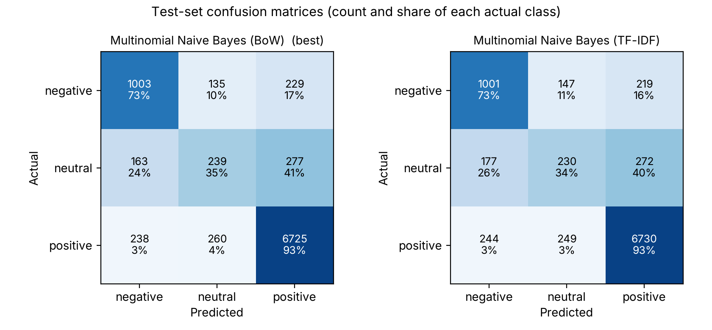
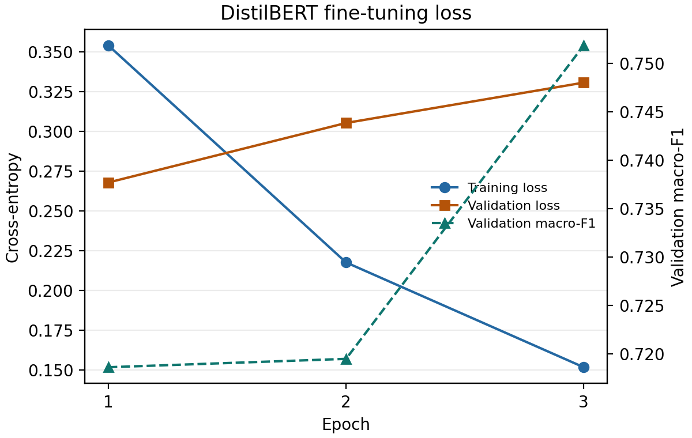
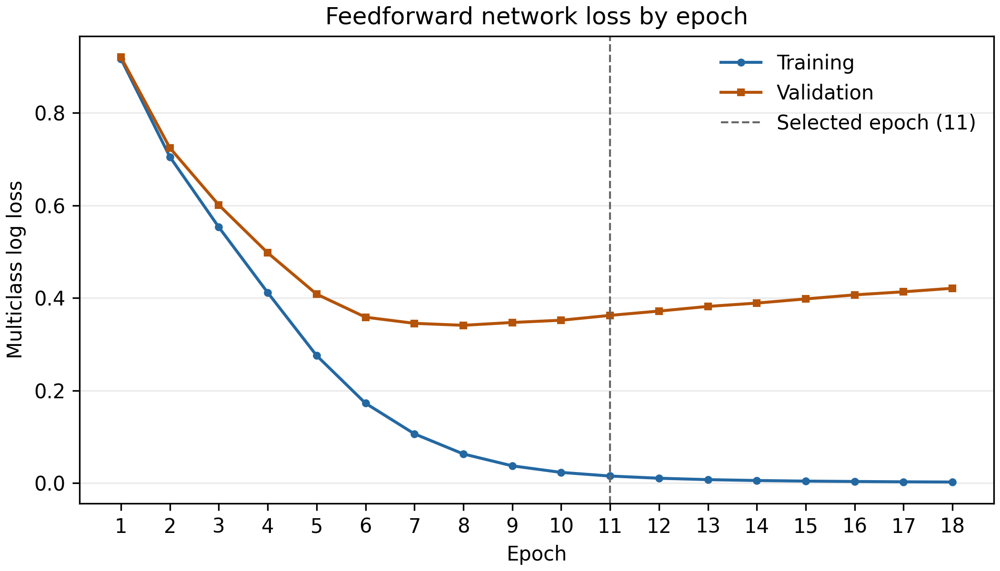
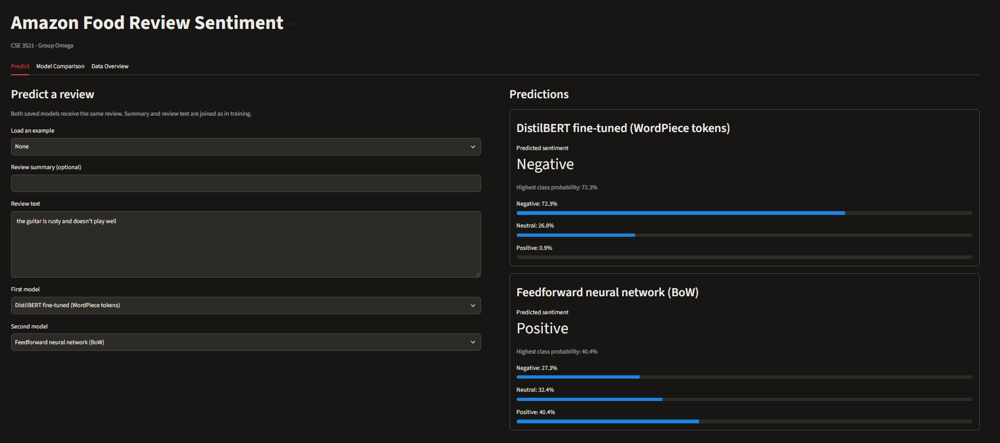
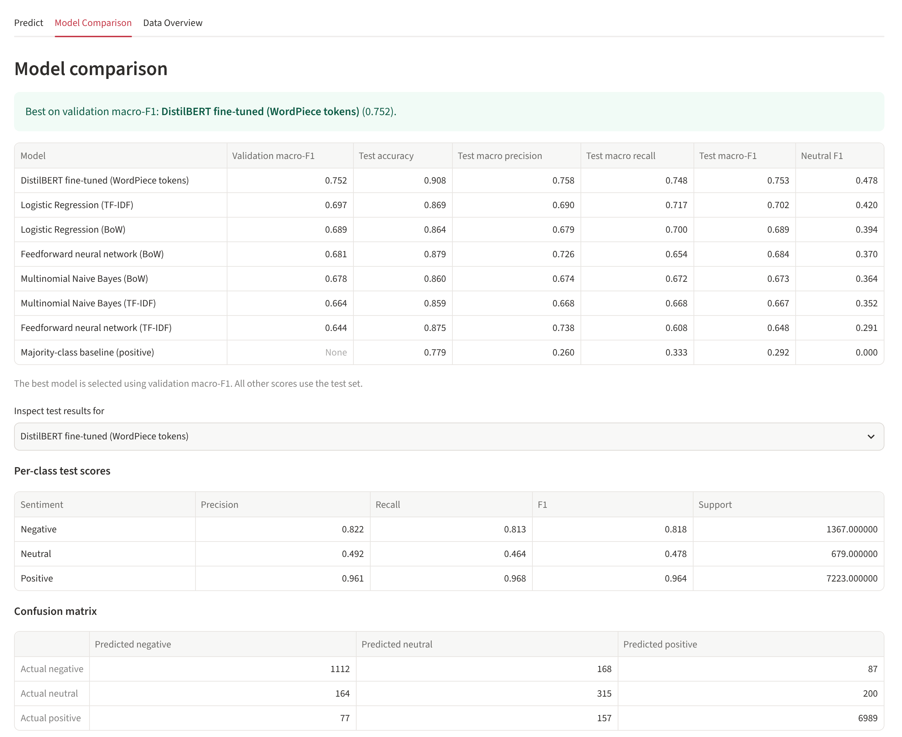

streamlit run app.pyWe classify Amazon Fine Food reviews as negative (1 to 2 stars), neutral (3 stars), or positive (4 to 5 stars). All models use the same 46,344-review seed-46 dataset and the same stratified split: 30,123 training, 6,952 validation, and 9,269 test reviews. The model input is the review summary and body joined by a space. Hyperparameters and checkpoints were chosen on the validation split only, and each model was scored once on the test split. Positive reviews make up 78% of the data and neutral only 7%, so we rank models by macro-F1, which weights the three classes equally, rather than by accuracy.
| Model | Input | Accuracy | Macro precision | Macro recall | Macro F1 | Neutral F1 | Training time (s) |
|---|---|---|---|---|---|---|---|
| Majority class (always positive) | none | 0.779 | 0.260 | 0.333 | 0.292 | 0.000 | n/a |
| Naive Bayes | Bag of Words | 0.860 | 0.674 | 0.672 | 0.673 | 0.364 | 3.2 |
| Naive Bayes | TF-IDF | 0.859 | 0.668 | 0.668 | 0.667 | 0.352 | 3.7 |
| Logistic Regression | Bag of Words | 0.864 | 0.679 | 0.700 | 0.689 | 0.394 | 43.4 |
| Logistic Regression (best classical) | TF-IDF | 0.869 | 0.690 | 0.717 | 0.702 | 0.420 | 21.0 |
| Feedforward network 32-16 | Bag of Words | 0.879 | 0.726 | 0.654 | 0.684 | 0.370 | 46.9a |
| Feedforward network 32-16 | TF-IDF | 0.875 | 0.738 | 0.608 | 0.648 | 0.291 | 21.0b |
| Feedforward network 64-32, dropout | Bag of Words | 0.865 | 0.685 | 0.715 | 0.698 | 0.408 | 55.3c |
| Feedforward network 64-32, dropout | TF-IDF | 0.877 | 0.711 | 0.690 | 0.700 | 0.402 | 73.4c |
| Averaged word embeddings | learned embeddings | 0.853 | 0.666 | 0.696 | 0.679 | 0.389 | 107.5c |
| 1D CNN | learned embeddings | 0.861 | 0.692 | 0.667 | 0.678 | 0.400 | 169.9c |
| DistilBERT, fine-tuned (best) | WordPiece tokens | 0.908 | 0.758 | 0.748 | 0.753 | 0.478 | 676.2c |
The classical models and the feedforward networks share the same text features. Reviews are lowercased, HTML tags such as <br /> are removed, and "n't" is expanded to "not". We keep unigrams and bigrams that appear in at least two training reviews, which gives 192,646 features. Bag of Words stores raw counts. TF-IDF uses 1 + log of the count, scales each term by how rare it is across reviews, and normalizes each review to unit length. Logistic Regression was tuned over C (0.01 to 10) and class weighting. Balanced class weights won for both feature sets because without them the model rarely predicts neutral: at C = 1 on TF-IDF, validation macro-F1 was 0.619 unweighted and 0.686 balanced. TF-IDF preferred weaker regularization (C = 3) than counts (C = 0.1), since its values are small fractions while counts can be large, and it trained in half the time. The terms with the largest weights toward neutral are "but", "ok", "however", "okay", "not bad", and "not great". The last two exist only because we kept bigrams and expanded "n't".

Fine-tuned DistilBERT has the highest validation macro-F1 (0.752) and the highest test macro-F1 (0.753), 0.051 above Logistic Regression on TF-IDF, so it is our best model. It is also the best on every class: it finds 81% of negative reviews (LR 79%), 46% of neutral reviews (LR 44%), and 97% of positive reviews (LR 93%), and its neutral F1 rises from 0.420 to 0.478 (Figure 1). Three course ideas explain the ranking.
Sequence information. Every other model in Table 1 either sees a bag of unigrams and bigrams or, for the CNN and averaged embeddings, at most a five-word window or an average that throws order away. None of them can tell which clause of "good flavor, but the box arrived crushed" decides the rating. DistilBERT uses self-attention, so each token's representation depends on every other token in the review and its position. This is what neutral reviews need: 72% of training neutral reviews contain "but", and the rating depends on which side of it the writer lands on.
Pretrained feature representation. The networks that learn word embeddings from scratch (1D CNN 0.678, averaged embeddings 0.679) do worse than Logistic Regression, because 30,123 reviews, only 2,206 of them neutral, are not enough to learn what words mean. DistilBERT starts from weights pretrained on a large general English corpus, so words such as "meh" or "decent" already have useful representations, and fine-tuning only has to adjust them to our three labels.
Capacity and regularization. Capacity alone does not help. The 32-16 network without dropout has about 6.2 million weights against 578,000 for Logistic Regression, memorized the training set within a few epochs, and was trained without class weights, so it predicts positive for 97 to 98% of positive reviews but labels half (BoW) or 62% (TF-IDF) of neutral reviews as positive. It has high accuracy and low macro-F1. Adding dropout 0.5, wider 64-32 layers, early stopping, and a class-weighted loss lifts the same network to 0.698 to 0.700, level with Logistic Regression: on a fixed bag of n-grams, a linear model already captures most of what the representation offers. DistilBERT has far more capacity (67 million parameters), but pretraining, a small learning rate, and only three epochs keep it from overfitting the way the from-scratch networks did.
Architecture and why we chose it. Our deep model is DistilBERT (distilbert-base-uncased), a smaller version of BERT with 6 transformer layers, 768-dimensional hidden states, and 12 attention heads per layer, about 67 million parameters in total. Text is split into WordPiece tokens, so a misspelled or rare word is broken into known pieces rather than dropped. We added a linear classification layer with softmax over the three classes on top of the first ([CLS]) token and fine-tuned all layers, as suggested in the Neural Networks & Deep Learning lecture (slides 25 to 28). We chose DistilBERT over full BERT because it keeps most of BERT's accuracy at about 60% of its size and trains on a laptop GPU. Reviews are cut to 256 tokens, which shortens 7.7% of training reviews. Training used AdamW with learning rate 2e-5, weight decay 0.01, batch size 16, linear warmup over the first 10% of steps then linear decay, float16 mixed precision, and seed 46, for 3 epochs on an RTX 3060 Laptop GPU. We kept the epoch with the best validation macro-F1. The model is saved in float16 (134 MB, stored with Git LFS), and the test scores in Table 1 come from that saved copy.
As deep baselines we also trained feedforward networks on our TF-IDF and Bag of Words features (Ethan's 32-16 scikit-learn network, and a 64-32 PyTorch network with dropout 0.5 and early stopping), and two models on word embeddings learned from scratch: a 1D CNN with 100 filters each of width 3, 4, and 5 and max pooling over time, and a network on the average of the word embeddings.


Loss curves. DistilBERT's training loss falls from 0.354 to 0.152 over the three epochs. Validation loss is lowest after the first epoch (0.268) and rises to 0.331 by epoch 3, while validation macro-F1 keeps rising (0.719, 0.719, 0.752). Rising validation loss means the model becomes more confident, and is sometimes confidently wrong, but more of its top predictions are correct, especially for the rare classes. Since we care about the predicted label, we kept epoch 3. Macro-F1 was still rising, so a fourth epoch might help a little, but the gap between the two losses suggests the model is close to overfitting. The feedforward network shows the same pattern more strongly: its validation loss is lowest at epoch 8 (0.341) and then climbs while its training loss falls below 0.003, a clear sign of memorization. The Bag of Words version overfits about three times faster (validation loss lowest at epoch 3). Dropout and early stopping in the 64-32 network fix most of this.
Advantage over the classical baselines. DistilBERT reads the review as an ordered sequence and starts from pretrained knowledge of English, so it handles contrast and negation that a bag of words cannot. It is better than Logistic Regression on every class, and the gain is largest exactly where the classical models fail: 51 more neutral reviews and 307 more positive reviews are labeled correctly on the test set, and it confuses negative with positive much less (87 negative reviews called positive against 142).
Limitation. Cost. Fine-tuning took 676 s of GPU time, against 21 s on a CPU for Logistic Regression, and it needs a GPU to train in reasonable time. The saved model is 134 MB against 6.5 MB, and on a 4-CPU machine it takes about 33 ms per review against under 2 ms for Logistic Regression, which matters for the free Streamlit hosting tier. It is also much harder to interpret: Logistic Regression gives one weight per word or phrase, while DistilBERT's decision is spread over 67 million parameters and attention patterns. Finally, neutral F1 is still below 0.5, so even a pretrained transformer finds 3-star reviews hard with 2,206 training examples.
The app (app.py) has three tabs. Predict (Figure 3) has an input column and a predictions column. The user can load a positive, neutral, or negative example or type a review summary and review text, then pick a first and a second model from drop-down lists. Both models receive the same text, joined the same way as in training, and each prediction card shows the predicted sentiment, the highest class probability, and a bar for each of the three class probabilities, so the two models can be compared side by side. Model Comparison (Figure 4) names the best model by validation macro-F1 and lists every served model with its validation macro-F1 and test accuracy, macro precision, macro recall, macro-F1, and neutral F1, plus the majority-class baseline. Choosing a model under "Inspect test results for" shows its per-class precision, recall, F1, and support and its test confusion matrix. Data Overview shows the number of sampled and cleaned reviews, a bar chart and table of the sentiment distribution, and the size of the train, validation, and test splits.
The app finds models by reading report/model_results/*.json and loads the saved pipelines from models/ without retraining, so a newly trained model appears without code changes. It serves seven models: both Naive Bayes, both Logistic Regression, and both 32-16 feedforward models, plus DistilBERT, which runs on the CPU. The three PyTorch models trained only for comparison are left out because their weights are not committed.


Run locally from the repository root with pip install -r requirements.txt, git lfs pull (for the DistilBERT weights), and streamlit run app.py. The app is deployed on Streamlit Community Cloud at https://omega3521-63vkkswjncvfwaywsebfbb.streamlit.app/.
The cleaned dataset (data/processed/group_seed46_clean.csv) and the split (data/splits/split_seed46.csv) are committed, so the models can be retrained without downloading anything. To rebuild the dataset from the source, scripts/setup_data.py downloads the Kaggle Amazon Fine Food Reviews file and scripts/prepare_sample.py draws our 50,000-review sample with random_state=46 and assigns the labels. Dependencies are pinned in requirements.txt (Python 3.11 or newer): pip install -r requirements.txt. The classical models and the 32-16 network are retrained with python scripts/train_naive_bayes.py, python scripts/train_logistic_regression.py, and python scripts/train_neural_network.py (add --features bag_of_words for the Bag of Words network), in that order, because the network loads the vectorizers that the Logistic Regression script saves. The GPU models are retrained with python scripts/train_torch_models.py (dropout network, 1D CNN, averaged embeddings) and python scripts/train_distilbert.py after installing the CUDA build of PyTorch from requirements-gpu.txt. Each script tunes on the validation split, saves the model in models/, and writes test metrics, confusion matrices, and training time to report/model_results/. python scripts/compare_models.py then rebuilds Table 1 and Figure 1. The same steps are in README.md under "Reproducing our results".
Aniket Chaudhari. Since M2 I merged the stacked M2 branches into main, improved the shared text cleaning and the Naive Bayes tuning, and updated the app to load every trained model. For M3 I added training time to the Naive Bayes results, trained the 32-16 network on Bag of Words, trained the GPU models (fine-tuned DistilBERT, the dropout network, the 1D CNN, and the averaged-embedding network) on an RTX 3060, saved DistilBERT with Git LFS so the app can serve it, wrote scripts/compare_models.py for the comparison table and confusion matrices, wrote the reproducibility steps in the README, deployed the app to Streamlit Community Cloud, and assembled this report. Remaining: the final report and demo slides due November 29.
Sophiya Khurana. Trained Logistic Regression on Bag of Words and TF-IDF (task 1), tuning C and class weighting on the validation set, and saved both models and both fitted vectorizers to models/ so the app and the neural network can load them. Logistic Regression with TF-IDF is our best classical model. Also listed the top TF-IDF terms per class and wrote the feature representation and Logistic Regression part of Section 1. Remaining: the dataset and features section of the final report.
Ethan Brown. Since M2, added the feature visualization and the error analysis of eight misclassified reviews. For M3, trained the 32-16 feedforward network on TF-IDF (task 2), recorded training and validation loss for each epoch, plotted the loss curves, selected the checkpoint by validation macro-F1, and saved the model and its metrics. Remaining: the error analysis section of the final report.
Lianyu Yang. Built the first version of the Streamlit app (app.py), merged on November 21, with model selection, example reviews, a probability chart, and a comparison of all models. For M3, reworked the Predict tab into a side-by-side layout, fixed the Data Overview chart labels, and fixed a bug that showed the validation split size as 0. Remaining: the system description for the final report.
Shilin Dong. Trained the Multinomial Naive Bayes baseline in M2. For M3, rebuilt the app into its three tabs (Predict, Model Comparison, Data Overview): the two-model side-by-side prediction, the comparison table with the majority-class baseline, the per-class scores and confusion matrix for any model, and the data overview, and updated the app section of the README. Remaining: the results section of the final report.